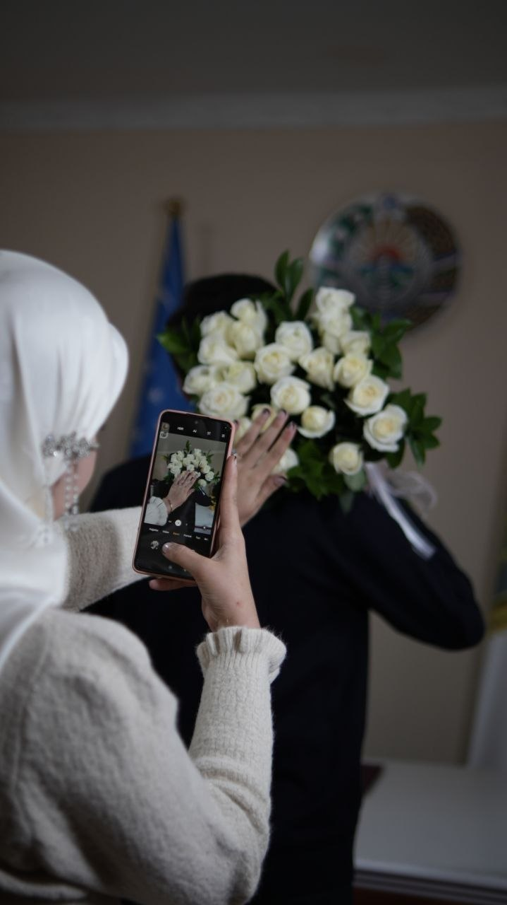
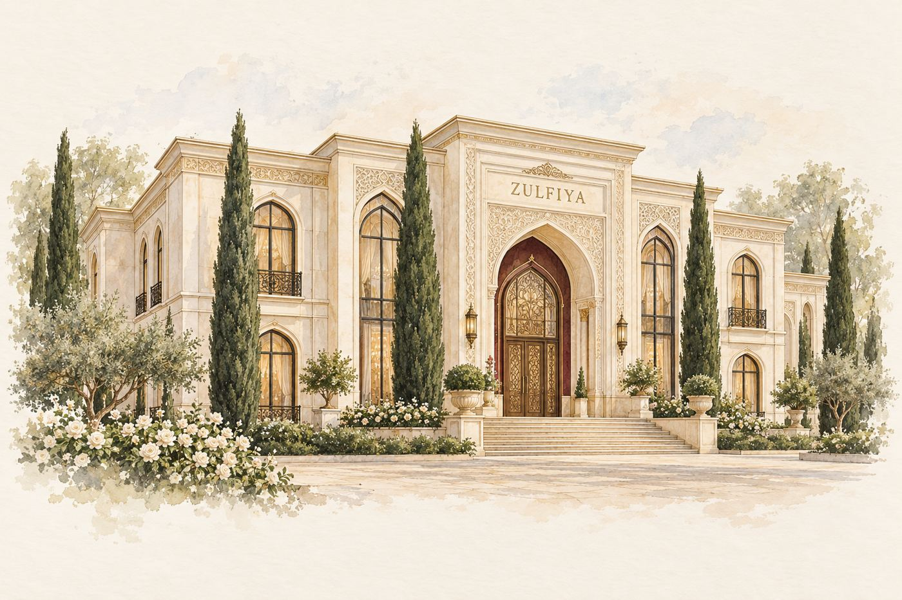

NIKOH TO‘YIGA TAKLIFNOMA
Sardorbek&Gulsevar
Go‘zal kunimizning aziz mehmoni bo‘ling.
Taklifnomani ochish25-oktabr 2026 — 12:00–14:00
01BISMILLAHIR ROHMANIR ROHIYMTAKLIF
Assalomu alaykum, azizlar!
Sardorbek&Gulsevar
Hayotimizning eng go‘zal sahifasi ochilayotgan kunda sizni yonimizda ko‘rishdan mamnun bo‘lamiz.
Sizni nikoh to‘yimizga taklif etamiz. Quvonchimizga sherik bo‘ling!
02BIZNING KUNIMIZ2026
25
Oktabr 2026
YAKSHANBA · 12:00–14:00
UCHRASHUVGA OZ QOLDI
Har bir lahza
siz bilan go‘zal.
00kun
00soat
00daqiqa
00soniya
Toshkent vaqti bilan
03KUNIMIZNING GO‘ZAL LAHZALARIDASTUR
Unutilmas
lahzalar.
Nikoh to‘yimiz boshlanishi
Aziz mehmonlarimizni kutamiz
Dastur yakuni
Quvonchimizga sherik bo‘lganingiz uchun rahmat
04BIRGA YANGI HAYOT SARIXOTIRALAR
Sevgi bilan yozilgan
yangi sahifa.


SURATLARNI SURING
“Eng go‘zal manzil — birga boshlangan hayot.”
05SIZNI SHU YERDA KUTAMIZMANZIL
Zulfiya
to‘yxonasi
25.10.2026
SANA VA VAQT
25-oktabr 2026
12:00–14:00 · Toshkent vaqtiQALBDAN QALBGA
Bir og‘iz tilak,
bir olam quvonch.
Samimiy tilaklaringiz yangi hayotimizning eng go‘zal esdaligi bo‘lib qoladi.
Sardorbek & Gulsevar